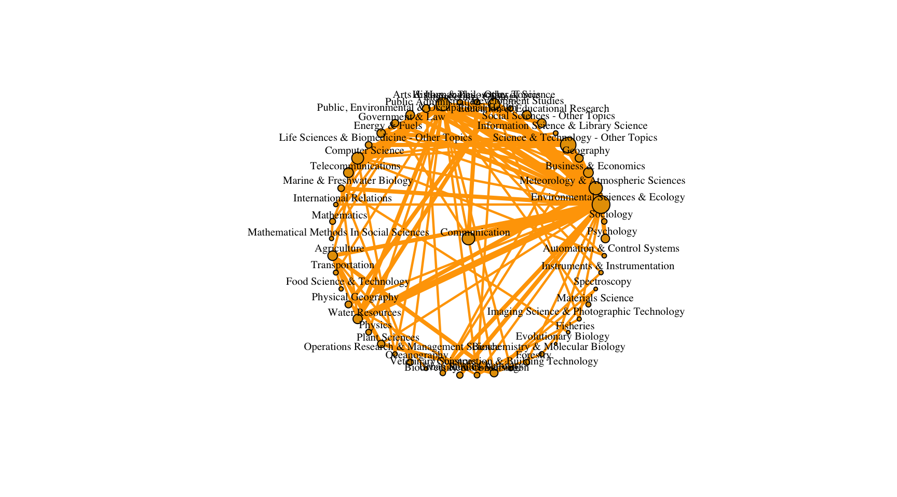
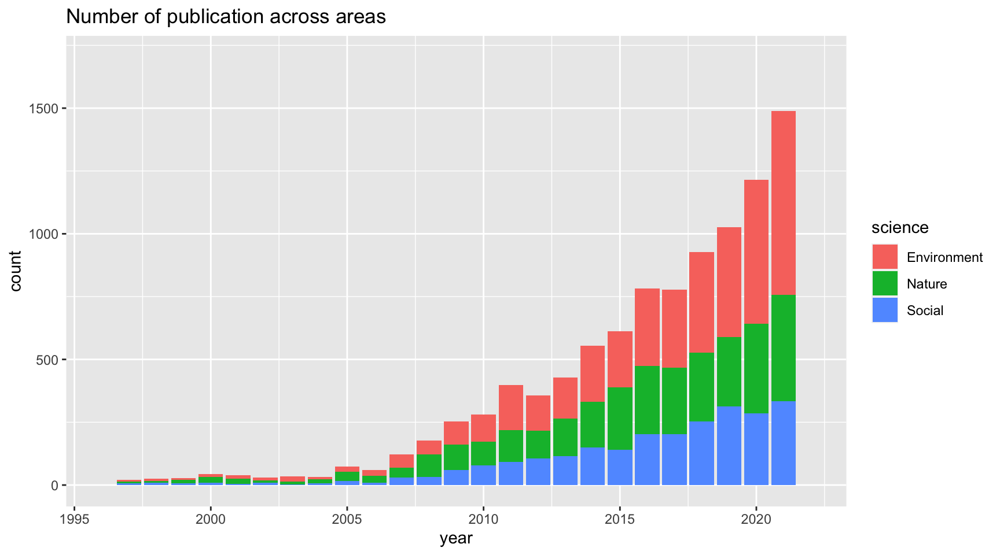
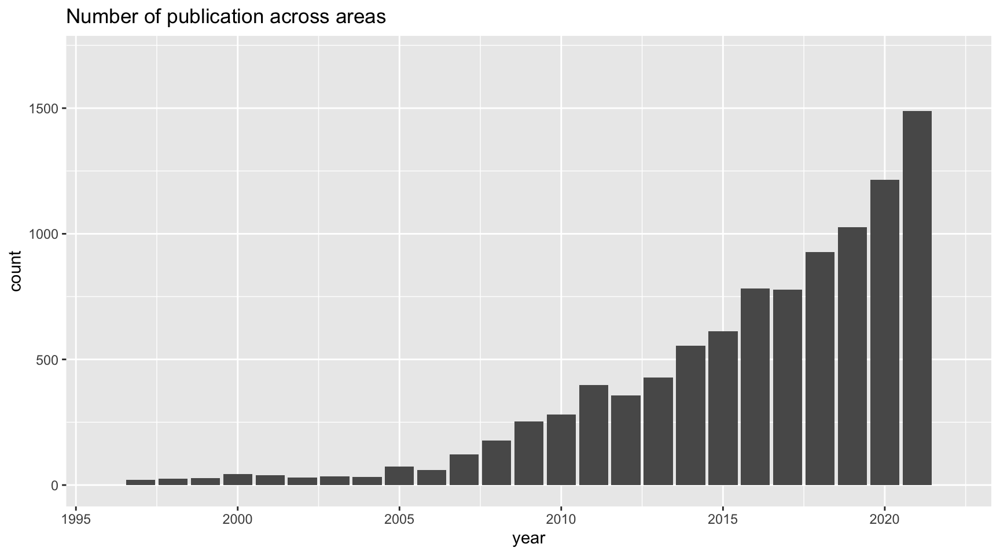
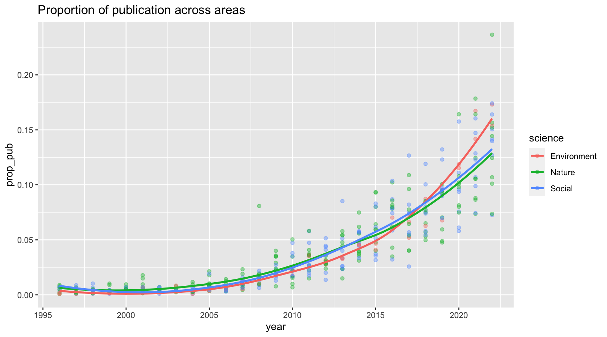

Code
library(tidyverse)
library(tidytext)
library(readxl)
library(igraph)library(tidyverse)
library(tidytext)
library(readxl)
library(igraph)ref_1k <- read_excel("data/12k/wos_cc_1-1000.xls")
ref_2k <- read_excel("data/12k/wos_cc_1001-2000.xls")
ref_3k <- read_excel("data/12k/wos_cc_2001-3000.xls")
ref_4k <- read_excel("data/12k/wos_cc_3001-4000.xls")
ref_5k <- read_excel("data/12k/wos_cc_4001-5000.xls")
ref_6k <- read_excel("data/12k/wos_cc_5001-6000.xls")
ref_7k <- read_excel("data/12k/wos_cc_6001-7000.xls")
ref_8k <- read_excel("data/12k/wos_cc_7001-8000.xls")
ref_9k <- read_excel("data/12k/wos_cc_8001-9000.xls")
ref_10k <- read_excel("data/12k/wos_cc_9001-10000.xls")
ref_11k <- read_excel("data/12k/wos_cc_10001-11000.xls")
ref_12k <- read_excel("data/12k/wos_cc_11001-12000.xls")
ref_13k <- read_excel("data/12k/wos_cc_12001-12229.xls")
ref_all <- rbind(ref_1k, ref_2k, ref_3k, ref_4k, ref_5k, ref_6k,
ref_7k, ref_8k, ref_9k, ref_10k, ref_11k, ref_12k, ref_13k)
ref_all <- ref_all %>% mutate(article_id = row_number()) %>% # created an identifier for each article
rename(research_area = `Research Areas`,
year = `Publication Year`) # rename variable
# select the columns needed -- article_id and research_area
# separate several research areas in the column and transform to long format
# each row is one area of one article
ref_all_long <- ref_all %>%
select(article_id, research_area, year) %>%
separate_rows(research_area, sep = ";\\s*")
# allow to set a threshold to include only areas that has more than x articles
included_areas <- ref_all_long %>% count(research_area) %>% arrange(desc(n)) %>% mutate(include = ifelse(n > 0, 1, 0))
ref_all_long <- left_join(ref_all_long, included_areas) %>%
group_by(article_id) %>%
mutate(areas_include = sum(include)/n()) %>%
ungroup() %>%
filter(areas_include == 1)
# calculate the number of articles in each area included (will be use as the size of the nodes)
ref_all_area <- ref_all_long %>%
group_by(research_area) %>%
mutate(include_2 = row_number()) %>%
ungroup() %>%
filter(include_2 == 1) %>%
select(-include_2)
ref_area_pairs <- ref_all_long %>%
# create all possible pairs of subjects
inner_join(ref_all_long, by = "article_id") %>%
filter(research_area.x < research_area.y) %>%
# calculate the number of articles that links two areas together (edge weight)
group_by(research_area.x, research_area.y) %>%
summarise(weight = n(), .groups = "drop") %>%
arrange(desc(weight)) %>%
filter(weight > 0, !is.na(research_area.x), !is.na(research_area.y))
# as weight distribution is very skewed
# (some area pairs has very large amount of articles linking them together but others only have very few)
# let's do a transformation: weight_2 = floor(ln(weight)) and only keep the weight that is bigger than 2
# which equals to only keep edges that has 8 or more articles
ref_area_pairs_new <- ref_area_pairs %>% mutate(weight_2 = floor(log(weight))) %>% filter(weight_2 > 2)
# also do a similar transformation for the number of the articles in each area: area_size = log10(n)
# update the size of area dataframe to include only those which appeared on either side of the nodes in ref_area_pairs_new
area_included <- c(ref_area_pairs_new$research_area.x, ref_area_pairs_new$research_area.y)
ref_all_area_new <-
ref_all_area %>% mutate(area_size = log10(n)) %>% filter(!is.na(research_area)) %>%
rowwise() %>% mutate(area_include = research_area %in% area_included) %>% ungroup() %>%
filter(area_include == T)
# create a igraph object
ref_area_pairs_vis <- graph_from_data_frame(d = ref_area_pairs_new,
vertices = ref_all_area_new %>% select(research_area, area_size) ,
directed = F)
pair_weight <- E(ref_area_pairs_vis)$weight_2^2/4
area_size <- V(ref_area_pairs_vis)$area_size^2# for interactive plot use tkplot()
plot(ref_area_pairs_vis,
vertex.label.color = "black",
edge.color = 'orange',
vertex.size = area_size,
#vertex.frame.color = NA,
vertex.label.cex = 0.65,
vertex.label.dist = 1,
edge.width = pair_weight,
layout = layout_as_star(ref_area_pairs_vis))
final_vis_df <- as_long_data_frame(ref_area_pairs_vis)ref_all_long %>%
group_by(research_area) %>%
count() %>% arrange(desc(n))# A tibble: 142 × 2
# Groups: research_area [142]
research_area n
<chr> <int>
1 Environmental Sciences & Ecology 4036
2 Science & Technology - Other Topics 2302
3 Meteorology & Atmospheric Sciences 1314
4 Engineering 1299
5 Communication 1062
6 Computer Science 897
7 Geology 814
8 Telecommunications 475
9 Business & Economics 468
10 Agriculture 446
# ℹ 132 more rows# select the biggest 20 fields
big_fileds <- ref_all_long %>%
group_by(research_area) %>%
count() %>% arrange(desc(n)) %>%
select(research_area)
big_fileds <- as.vector(big_fileds[1:20,1])
# summarize the dataframe
plot_areas <- ref_all_long %>%
filter(research_area %in% c("Communication",
"Business & Economics",
"Education & Educational Research",
"Public, Environmental & Occupational Health",
"Social Sciences - Other Topics",
"Psychology",
"Public Administration",
"Environmental Sciences & Ecology",
"Meteorology & Atmospheric Sciences",
"Engineering",
"Geology",
"Agriculture",
"Water Resources",
"Energy & Fuels",
"Geography",
"Chemistry",
"Plant Sciences"),
year != 2023) %>%
mutate(
science = ifelse(research_area %in% c("Communication",
"Business & Economics",
"Education & Educational Research",
"Public, Environmental & Occupational Health",
"Social Sciences - Other Topics",
"Psychology",
"Public Administration"), "Social",
ifelse(research_area %in% c(
"Engineering",
"Geology",
"Agriculture",
"Water Resources",
"Energy & Fuels",
"Geography",
"Chemistry",
"Plant Sciences"),
"Nature", "Environment"))
)
ggplot(plot_areas,
aes(x = year, fill = science)) +
geom_bar() +
xlim(1996, 2022) +
labs(title = "Number of publication across areas")
ggplot(plot_areas %>%
group_by(year, science) %>%
mutate(prop_pub = n/sum(n)),
aes(x = year, y = )) +
geom_bar() +
xlim(1996, 2022) +
labs(title = "Number of publication across areas")
plot_data_2 <- ref_all_long %>%
group_by(research_area, year) %>%
count() %>%
ungroup() %>%
filter(research_area %in% c("Communication",
"Business & Economics",
"Education & Educational Research",
"Public, Environmental & Occupational Health",
"Social Sciences - Other Topics",
"Psychology",
"Public Administration",
"Environmental Sciences & Ecology",
"Meteorology & Atmospheric Sciences",
"Engineering",
"Geology",
"Agriculture",
"Water Resources",
"Energy & Fuels",
"Geography",
"Chemistry",
"Plant Sciences"),
year != 2023) %>%
mutate(
science = ifelse(research_area %in% c("Communication",
"Business & Economics",
"Education & Educational Research",
"Public, Environmental & Occupational Health",
"Social Sciences - Other Topics",
"Psychology",
"Public Administration"), "Social",
ifelse(research_area %in% c(
"Engineering",
"Geology",
"Agriculture",
"Water Resources",
"Energy & Fuels",
"Geography",
"Chemistry",
"Plant Sciences"),
"Nature", "Environment"))
) %>%
group_by(research_area) %>%
mutate(prop_pub = n/sum(n)) %>%
ungroup()
ggplot(plot_data_2,
aes(x = year, y = prop_pub, color = science)) +
geom_point(alpha = 0.4) +
geom_smooth(se = F) +
xlim(1996, 2022) +
labs(title = "Proportion of publication across areas")